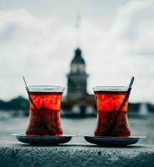

Çay
Çayın Yararları
Çay İnme ve Kalp sağlığına iyi Gelmektedir

Çay
Çayın Zararları
Çayın Yararları Vardır Ancak Bi O Kadarda zararları vardır bunlardır bir tanesi kabızlık ve düşük demir emilimidir
Çay İnme ve Kalp sağlığına iyi Gelmektedir
Çayın Yararları Vardır Ancak Bi O Kadarda zararları vardır bunlardır bir tanesi kabızlık ve düşük demir emilimidir
Çay ve simit beraber çok güzel giden bir ikilidir Kız Kulesinin karşısına geçip çay simit İstanbula gelenlerin yaptığı şeylerden biridir
simit ne kadar yağlı olsada dışı çıtır içi yumuşak olan bazende tamamen yumuşak olan bence kahvaltılık bir hamurişidir
Simit Tek başınada güzel olsa içine peynir marul domates koyuncada sandviç gibi çok güzel oluyor
Kız Kulesine Bakarız Ama Kız Kulesi Nerede orda Marmara Denizin Ortasında Çok güzel bir Yerde Her Geçen fotoğrafını çekerde Geçer
Marmaray, İstanbul'da Asya ve Avrupa kıtalarını deniz altından birleştiren, demiryolu ile yolcu ve yük taşımacılığı sağlayan modern bir ulaşım projesidir.
İstanbul'un Sahil Yolu, Boğaz'ın muhteşem manzaraları eşliğinde tarihi yapılar, parklar ve deniz kokusuyla büyüleyici bir gezinti imkanı sunar; özellikle gün batımında İstanbul'un eşsiz siluetini izlemek için idealdir.